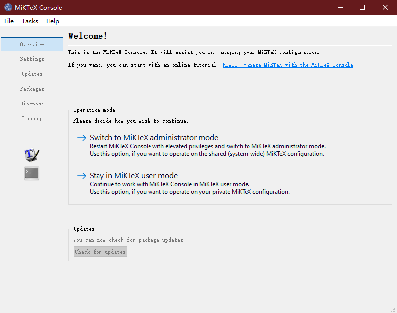

FAQ¶
注意
此节不仅包含了安装时出现的问题,也包含了各种其他问题,若暂时没有遇到或不需要则不必要看.
LaTex问题¶
如果你尝试编译 example_scenes.py 中的其他动画类,出现报错 Latex error converting to dvi 的话,那就对了.
LaTex是非常折腾的东西,但如果你熟悉了的话也就那样吧.这里报错最大的问题其实是LaTex的一些宏包没有安装好,而很多MiKTeX宏包安装是连接到国外的服务器.如果你科学上网的话,这里应该不成问题,因为Latex会自动安装缺失的宏包.如果没有的话,因为连接超时下载不到宏包无法正确编译而报错.
解决方案一:科学上网!这是最佳方案,因为可以持续更新宏包!
解决方案二:手动安装或者更换镜像源! 这里 有一些解决方案!
Manim编译需要的LaTex宏包你可以在 /manimlib/tex_template.tex 和 /manimlib/ctex_template.tex 中找到;前者是英文模板,后者是中文模板.怎么使manim支持中文,后面会讲到.
你可以打开电脑中的MiKTeX Console:
选择 Switch to MiKTeX Console administrator mode 进入管理员模式,点击左手边的 Package .
在上面的方框中输入宏包名称来检查该宏包是否安装.
使LaTex支持更多的Latex宏包/字体¶
参考 Manim fast tutorial - How to add more LaTeX packages?
更改 /manimlib/tex_template.tex 或者 /manimlib/ctex_template.tex 模板即可.但如果你不熟悉LaTex请不要随便更改!
以我的LaTex模板为例:
1 2 3 4 5 6 7 8 9 10 11 12 13 14 15 16 17 18 19 20 21 22 23 24 25 26 27 28 29 30 31 32 33 34 35 36 37 38 39 40 41 42 43 44 45 46 47 | /documentclass[preview]{standalone}
/usepackage[english]{babel}
/usepackage{amsmath}
/usepackage{amssymb}
/usepackage{dsfont}
/usepackage{setspace}
/usepackage{tipa}
/usepackage{relsize}
/usepackage{textcomp}
/usepackage{mathrsfs}
/usepackage{wasysym}
/usepackage{ragged2e}
/usepackage{physics}
/usepackage{listings}
/usepackage{xcolor}
% /usepackage{microtype}
%% 字体设置
/usepackage[T1,OT1]{fontenc}
/usepackage{palatino} % english defalut font
/usepackage{calligra} % hand-writing /calligra
/newcommand{/sz}[1]{/fontencoding{OT1}/fontfamily{pplj}/fontseries{m}/selectfont #1} % non-aligned number
/newcommand{/gt}[1]{/fontencoding{OT1}/fontfamily{pgoth}/fontseries{m}/selectfont #1} % Gothic font
%% xelatex font
/usepackage{fontspec}
/usepackage{xeCJK}
/setCJKmainfont[BoldFont={Noto Sans S Chinese}]{Noto Serif CJK SC}
/setCJKmonofont{Noto Serif CJK SC}
/setCJKsansfont{Noto Serif CJK SC SemiBold} % /sf Chinese title font
/setmainfont{Palatino-Roman} % /sf English hand-writing font
/setsansfont{Zapfino}
%% 绘图工具
/usepackage[siunitx,RPvoltages,european]{circuitikz}
/usepackage{tikz}
% /DisableLigatures{encoding = *, family = * }
/linespread{1}
/begin{document}
YourTextHere
/end{document}
|
字体设置 :这里可以自定义字体,不详细展开.
绘图工具 :如果要使Tikz或者CircuiTikz的绘图正确显示,需要更改绘图的填充,否则不能在manim编译的动画中正确显示,因为manim会自动滤除颜色.对于一些LaTex自带的符号也是如此!如果你发现LaTex编译没有问题,那很大程度上的问题就是填充透明度等有问题.
有兴趣的可以尝试一下:
警告
需要在英文模式下,也就是 TEX_USE_CTEX=False 的情况下编译!因为中文情况下的处理会出现问题!
class TikzMobject(TextMobject):
CONFIG = {
"stroke_width": 1,
"fill_opacity": 1,
"stroke_opacity": 1,
}
class ExampleTikz(Scene):
def construct(self):
circuit = TikzMobject(r"""
/begin{circuitikz}[american voltages]
/draw
(0,0) to [short, *-] (6,0)
to [V, l_=$/mathrm{j}{/omega}_m /underline{/psi}^s_R$] (6,2)
to [R, l_=$R_R$] (6,4)
to [short, i_=$/underline{i}^s_R$] (5,4)
(0,0) to [open,v^>=$/underline{u}^s_s$] (0,4)
to [short, *- ,i=$/underline{i}^s_s$] (1,4)
to [R, l=$R_s$] (3,4)
to [L, l=$L_{/sigma}$] (5,4)
to [short, i_=$/underline{i}^s_M$] (5,3)
to [L, l_=$L_M$] (5,0);
/end{circuitikz}
""")
self.play(Write(circuit))
self.wait()
中文支持问题¶
首先要确保你的LaTex能够正常编译!在 manimlib/constants.py 找到 TEX_USE_CTEX 设置为 True.
如果你的LaTex在英文模式下能够正常编译的话,这里应该问题就不大了.如果出现 xeLatex error converting to dvi 报错,很大程度上还是宏包问题.这里中文使用的是 ctex 宏包,要注意有没有安装.
LaTex实在有很多可以讲的,这一块都能单独写好几本书了,我们放到后面.网上有很多资料和书籍,需要大家多多学习和折腾!
编译过慢问题¶
Manim编译有时候会很慢,如果你的电脑上有GPU的话,那恭喜你!你可用GPU来加速!在你的文件中添加如下代码:
import os
def set_gpus(gpu_index):
if type(gpu_index) == list:
gpu_index = ','.join(str(_) for _ in gpu_index)
if type(gpu_index) ==int:
gpu_index = str(gpu_index)
os.environ["CUDA_VISIBLE_DEVICES"] = gpu_index
然后在你的动画类的 def construct(self): 下面写一行代码: set_gpus(0) 或者 set_gpus([0,1]) 如果你是土豪有两块GPU的话!
有了GPU的加持,你会体验到编译速度的飞跃,但对于大规模的计算场景,如多个对象淡出、Update动画等,速度会回归龟速.
编译动态条问题¶
如果你不喜欢编译时的动态条,可以参考 Manim tutorial | Settings - Leave the progress bars by default 去除.
# TODO:完善细节.
如何改变视频输出地址¶
个人不建议更改!默认就好,方便管理. 如果要更改,可以参考 Manim tutorial | Settings - Change media directory 设置.
# TODO:完善细节.
如何在终端中设置输出的帧率¶
参考 Manim tutorial | Settings - Render faster, set FPS via terminal 进行设置.
# TODO:完善细节.
添加声音、SVG和图像¶
参考 Manim tutorial | 7 - Add sounds, svgs and images 进行设置.
添加声音¶
# TODO: 完善细节
添加SVG¶
# TODO: 完善细节
添加图像¶
# TODO: 完善细节
如何改变背景颜色 1¶
class ChangeBackgroundColor(Scene):
CONFIG={
"camera_config":{"background_color":RED}, # 改变背景色
"text":TexMobject(r"/frac{d}{dx}/Bigr|_{y=2}").scale(5)
}
def construct(self):
self.add(self.text)